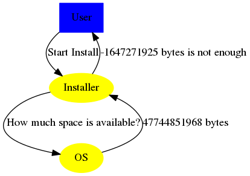

EuroSTAR Conference 2016 - First Day Summary
The First day was honored to the topic of testing with variables. Thank you … for the notes you gave us and showed us on how to test by variables while also finding out about the subjects on how to generate these variables and use them.
Notes from "Testing with variables" by Dale Emery taken by Martin 'golodhrim' Scholz
Variables and Testing
First identify your variables that could be changed and select the needed ones. But be aware, there will always be variables you are not aware of and that can influence a lot in the end. The first question we need to ask is: "What is a variable?"
- Variable
- Anything whose value can be changed
After all there is not only one type of variables, there are at all three:
- obvious, like a field on a form,
- hidden, like an internal value or
- subtle, like the state of a control
Testing here involves choosing values for every variable (not just the obvious ones).
- A Subtle Variable
In January 2004, Nasa lost contact with the Mars Rover Spirit. They soon discovered that the Spirit had encountered a serious anomaly and was rebooting itself over and over again. According to an article on the site Spaceflight Now, the Mars Rover problem was that there were too many files on the flash memory.
- Available Disk Space on Install

To make sure you identified a variable right, try this tip:
I could vary <VARIABLENAME>. (<N>) possible values for <VARIABLENAME> are <VAR1>, <VAR2>, … and <VARn>.